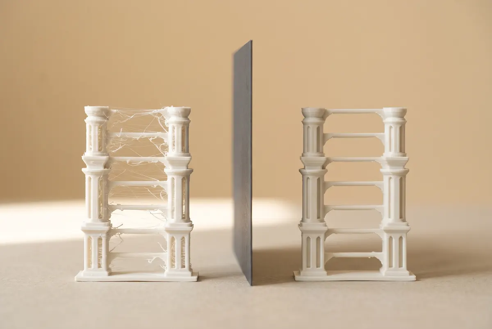

Questions? Start here.
Find the right bundle in two questions, check print settings for Filo PLA+, or jump straight to the answers.
Tested by the Filo team · Updated Nov 2026
Find your bundle in two questions.
Filo One + Refills · $379
Filo One plus 2 kg of PLA+ and 10 beginner models. It levels itself, so you can print with the kids on day one.
Tip: add a Family Colour Box ($44.90) so everyone gets their own colour.
Filo One + Refills · $379
Filo One plus 2 kg of Oat Milk and Charcoal Black, which cover almost every practical print, and a free Refila Bag.
Planning big projects? The Filo Duo bundle pairs Filo Pro with Filo Mini for small parts, $749.
Filo One + Refills in Silk Gold · $379
Choose Silk Gold and Lilac at checkout. The shiny finish hides layer lines, perfect for ornaments and personalised gifts.
Family Colour Box · $44.90
Six 250 g mini spools for the printer you already have. Join the Weekly Challenge to earn free spools.
Maker Pack + Refill Plan · $94.90
Five 1 kg rolls at $18.98 a kg. Add the Maker Refill Plan for 15% off every reorder and double Filo Points.
PLA+ in Silk Gold or Lilac · $22.90
A shiny finish that hides layer lines, perfect for vases, ornaments and personalised gifts.
Filo Mini · $249
A small, quiet printer just for the kids, so your main printer stays free. It fits on a study desk and runs at about 45 dB.
Filo Pro · $549
Go bigger and faster: a 30 cm build cube, up to 500 mm/s and an enclosed chamber for heat- and sun-proof outdoor parts.
Trade in your old printer for up to $100 off. Check your credit
Filo Mini · $249
A second printer for small gifts like keychains and ornaments, so batches finish twice as fast.
Print settings for Filo PLA+
Filo One loads these automatically. Already have another printer? Use these starting settings and print our calibration cube first.
| Printer family | Filament size | Nozzle | Bed | Notes |
|---|---|---|---|---|
| Filo One | 1.75 mm ✓ | 215°C | 55°C | Pick “Filo PLA+” in the Filo app; nothing else to set |
| Bambu Lab A1 / P1 series | 1.75 mm ✓ | 215°C | 55°C | Use the “Generic PLA” profile; spool fits standard holders |
| Creality Ender-3 / K1 series | 1.75 mm ✓ | 210°C | 55°C | If you see thin strings between parts, lower the “retraction” setting (how far the filament pulls back). |
| Prusa MK4 / MINI | 1.75 mm ✓ | 215°C | 60°C | The PrusaSlicer PLA profile works out of the box |
| Elegoo Neptune series | 1.75 mm ✓ | 210°C | 55°C | Level the bed before your first roll |
| Anycubic Kobra series | 1.75 mm ✓ | 210°C | 55°C | Textured plate recommended for easy release |
Printer names belong to their respective owners. Settings are starting points only.
Common questions
Pick a topic to jump to it. Still stuck? Message us on Shopee or use the contact form.
- Buying & bundles
- Shopee, payment & contact
- Filo Club & rewards
- Refila take-back
- Filo printers
- Filo PLA+ filament
- Printer trade-in
- Weekly Print Challenge
- Setup & troubleshooting
Buying & bundles
Should I buy the printer on its own or a bundle?
Filo One on its own is $349. Bundles add filament and project files, which works out cheaper than buying them separately. Not sure which one? The 2-question Kit Finder will pick one for you.
What comes in a bundle?
Filo Duo and Filo One + Refills include the printer (or printers), 2 kg of Filo PLA+ with tuned settings, tested project files and a free Refila Bag for your scraps. Refill Packs are filament only, for the printer you already have. Compare the bundles.
Shopee, payment & contact
Why do you sell on Shopee?
Shopee gives you a familiar checkout, SPayLater, buyer protection and Shopee vouchers that stack with our own codes. If you see a similar self-levelling printer cheaper in a Singapore Shopee store, message us before buying and we’ll match the printer price.
How do I contact you?
Use the form on our Join / Contact page, or message our Shopee store. We reply within one working day.
Filo Club & rewards
Do I need to join Filo Club?
Not to buy a printer. Filo Club is free and gets you the Weekly Challenge files, a stamp card, a $3 Shopee voucher and the optional Refill Plan. Join in a minute.
Why aren't points added automatically on Shopee?
Shopee handles checkout separately from our website. Registering your order number lets us link the purchase to your Filo Club account.
Can I combine a Filo voucher with Shopee vouchers?
Usually, yes. Shopee platform vouchers and shop vouchers follow Shopee's own stacking rules, which are shown at checkout.
Do points expire?
Points expire 12 months after you earn them. We'll email you a reminder 30 days before, if you've opted in to updates.
Do I need a Filo printer to earn?
No. Any printer counts for the Weekly Challenge and Refila returns. Points and rewards are spent in the Filo Shopee store.
Refila take-back
What is Refila?
Our take-back partner. Fill a Refila Bag with PLA scraps and empty spools, send it back, and earn Filo Points: about $1.25 back per kg of scraps. See how Refila works.
Do I need a Filo printer to use Refila?
No. Refila takes PLA scraps and plastic spools from any printer. You just need a free Filo Club account so we can credit your points.
How do I get my Filo Points?
Refila weighs and sorts your bag when it arrives, and we credit your points within 7 days. 200 points can be swapped for a $5 Shopee voucher on the Rewards page.
What happens to my scraps?
Filo spools are cleaned and refilled. PLA scraps are sorted by colour, shredded and melted into new filament. We publish the totals every quarter.
What counts as a “scrap” for Refila?
Failed prints, support pieces and the leftover bits you peel off, made from PLA or PLA+ of any brand. See the full list on the Refila page.
Filo printers
Do I have to use Filo filament?
No. Filo printers take any 1.75 mm filament they support (Filo One: PLA, PLA+, PETG and TPU). Filo PLA+ simply comes with tested settings in the Filo app, so there is nothing to tune.
What is the biggest thing I can print?
On Filo One, anything up to 220 × 220 × 250 mm in one piece, about the size of a shoebox standing on its end. Filo Mini prints up to 180 mm and Filo Pro up to 300 mm. Larger models can be split into parts and glued.
How loud is it in an HDB flat?
Filo One runs at about 48 dB in quiet mode, similar to a quiet fridge, and Filo Mini at about 45 dB. Most owners print in the living room or a study, and quiet mode is fine to leave running overnight.
What happens if the power trips mid-print?
Filo One saves its position. When power returns, it asks whether to resume, so a long print isn’t lost.
Is it safe to use around kids?
Yes, with an adult nearby. Filo One’s nozzle reaches 300°C and the bed 100°C, so keep hands away while it prints. Every bundle includes a printable safety checklist for children.
What maintenance does it need?
Wipe the build plate with isopropyl alcohol every few prints and keep filament dry. A spare 0.4 mm nozzle and tool kit are in the box for the occasional clog.
What if something breaks?
Every Filo printer has a 12-month warranty. Message our Shopee store and we’ll arrange a repair or replacement in Singapore, not overseas.
Compare all three printers on the printer page.
Filo PLA+ filament
Will it work with my printer?
Yes if it takes 1.75 mm filament. Filo printers load the right Filo PLA+ settings automatically, and most Bambu Lab, Creality, Prusa, Elegoo and Anycubic printers work too. Our compatibility table lists popular models and recommended settings.
What's the difference between PLA and PLA+?
PLA+ has additives that make it less brittle and slightly more heat-tolerant. It prints almost the same way, so you don't need to learn anything new.
How should I store it in Singapore's humidity?
Keep opened rolls in a sealed box or bag with the moisture-absorbing sachet in the box. If prints start stringing, dry the roll at 45–50°C for 4–6 hours.
More on the Filo PLA+ filament page.
Printer trade-in
Can I trade in a printer that isn’t a Filo?
Yes. We accept any filament 3D printer (the kind that melts plastic from a spool) from any brand. Most trade-ins are older printers from other brands.
Does my old printer need to work?
No. Broken or incomplete printers get half the credit, because they can only be stripped for parts.
Can I use the credit on a bundle?
Yes. The voucher works on any Filo printer or bundle in our Shopee store. It’s one trade-in per new printer.
Do I need to pack the old printer?
Any sturdy box works. Remove the filament and the build plate if it comes off, and our courier takes care of the rest.
Is trade-in available outside Singapore?
Not yet. Collection is only available at Singapore addresses.
More on the Printer trade-in page.
Weekly Print Challenge
Do I need a Filo printer to take part?
No. Any printer and any 1.75 mm filament counts. Rewards are paid in Filo filament and vouchers for the Filo Shopee store.
Can my kids join?
Yes. A parent can add children to their Filo Club account, and each child gets their own stamp card. We never ask for children’s personal details.
What if my print fails?
Post it anyway. Once a month, an honest “fail” photo counts as a stamp, and the failed print can go in your Refila Bag.
Can I catch up on weeks I missed?
Past challenge files stay on the Projects page, but only the current week earns a stamp.
More on the Weekly Print Challenge page.
Setup & troubleshooting
My first layer isn’t sticking.
Clean the bed with isopropyl alcohol, re-level it, and try a bed temperature 5°C higher. A thin layer of glue stick helps on smooth glass.
I’m getting stringing between parts.
Humidity is the usual cause in Singapore. Dry the roll (45–50°C for 4–6 hours), then lower the nozzle temperature by 5°C.

Can I print food-safe items?
We don’t recommend Filo PLA+ for items that touch food, because layer lines can trap bacteria. Use it for decorative and functional non-food items.